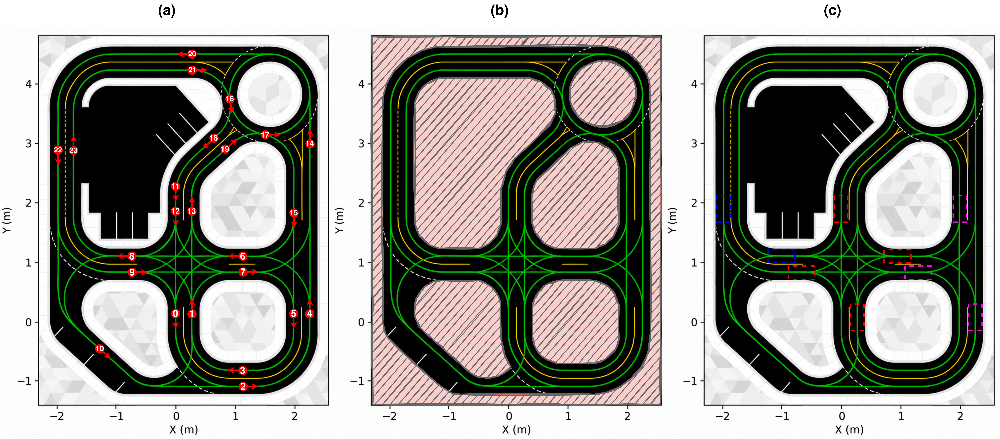

Local spatial context
The BEV extent is adapted to ±5 m around the vehicle on a 200 × 200 grid, matching the scale of the QCar2 environment.
Vision · Language · Action Project in progress
1 York University2 University of Illinois
Exploring the balance between scene understanding, trajectory prediction, and onboard computation for sustained closed-loop driving.

01 / Overview
Vision-language-action (VLA) models connect visual observations and natural-language instructions to robot actions. For embedded mobile robots, prediction quality must be considered alongside inference latency and the errors that accumulate during sustained operation.
QCarVLA investigates this trade-off on the QCar2 platform. The design adapts OpenDriveVLA with a shared FastViT image encoder for four surrounding cameras, language-conditioned flow-matching trajectory prediction, and discrete motion supervision during training. A common benchmark spans the Quanser QLabs digital twin and physical QCar2 hardware, with ordered pickup, stop, and drop-off tasks.
Evaluation considers task completion, traffic-rule compliance, drivable-area compliance, recovery dependence, and computational performance on the onboard NVIDIA AGX Orin.
This overview summarizes the current manuscript draft. The paper, implementation, dataset, and final experimental results have not been released on this page.
02 / Method
Compact environment encoding and continuous trajectory prediction, conditioned on language and vehicle state.
Four surrounding camera views, ego history, kinematic state, and a driving instruction.
Multi-view inputsA shared FastViT backbone supplies scene tokens and BEVFormer map context.
Scene + geometryLanguage, environment, and ego context condition a flow-matching decoder.
Six waypoints · four flow stepsAn NMPC controller tracks the trajectory while the policy predicts asynchronously.
Closed-loop controlThe BEV extent is adapted to ±5 m around the vehicle on a 200 × 200 grid, matching the scale of the QCar2 environment.
The decoder predicts a three-second ego-frame trajectory at 0.5-second intervals, refining all six waypoints together.
Feature distillation initializes the image encoder. An auxiliary discrete motion objective complements flow matching without action-token decoding at inference.
Method schematic redrawn from the manuscript description; design specifications are not measured performance results.
03 / Benchmark
Language-guided taxi tasks assess sustained driving in a digital twin and on a physical robot.
A digital twin supports repeatable traffic configurations and environment-state monitoring.
Onboard policy execution is evaluated with vehicle-state tracking and controlled traffic signals.
The evaluation server records at 10 Hz, with a two-minute timeout.
When the vehicle deviates more than 20 cm from the road centerline, control transfers to a privileged expert. Policy control resumes after the vehicle stays within 5 cm for more than three continuous seconds. Recovery transitions are counted, so route completion is assessed together with intervention dependence.
04 / Experiments
Reserved for closed-loop rollouts and experimental comparisons as the project develops.
QLabs route execution, traffic interactions, and recovery behavior.
Onboard trajectory prediction and tracking across task regions.
Benchmark comparisons, spatial-scaling ablations, and onboard inference measurements will be added once finalized. No performance claims or provisional numbers are presented in this template.
05 / Citation
A provisional reference for the manuscript in preparation. Update this entry when publication details are available.
@unpublished{schofield2026qcarvla,
title = {QCarVLA: Scalable VLA Design for Mobile Robots},
author = {Schofield, Hunter and Rezaei, Seyedreza and
Zhang, Hao and Haridevan, Amaldev and
Ma, Yiqun and Shan, Jinjun},
year = {2026},
note = {Manuscript in preparation}
}